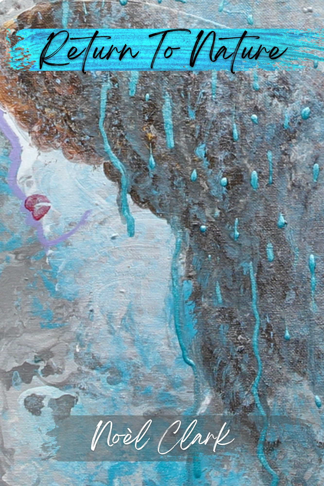
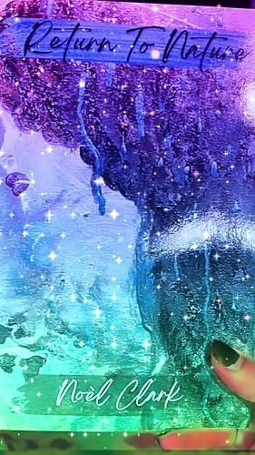
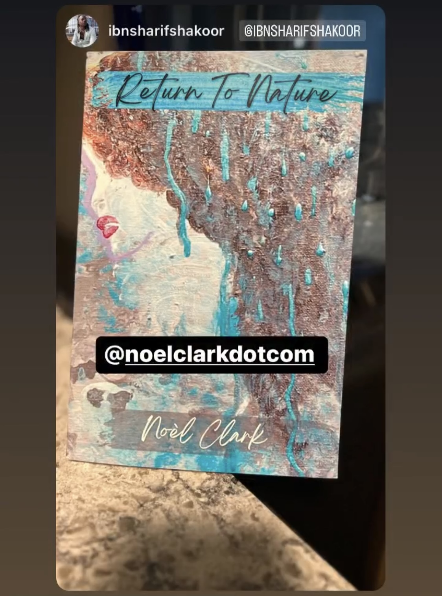
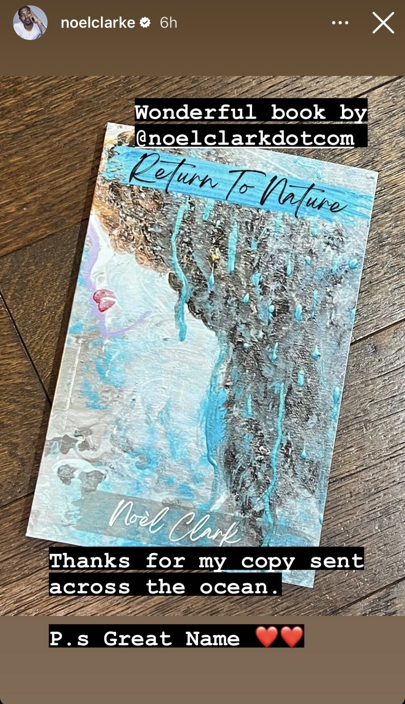

In my return to nature, I found myself following the enchanting glow of the rising morning sun to come upon random spots to take in sunrises.
I became addicted to chasing the sun and witnessing life’s brilliant art unfolding right before my eyes.
Like those early morning drives, the roads of introspection are often dark and lonely until we notice the light.
We are both the blind journeyman and guiding sun.
Return to Nature · Noèl Clark
Life is a magical adventure.
Stress is a common denominator.
We experience it in different ways.
Grief. Loss. Fear. Pressure. Trauma. Illness. Uncertainty.
Some stress is psychological. Some is emotional. Some is physiological. Often, those experiences overlap.
Return to Nature began with questions about those connections.
What happens when stress doesn't end with a stressful moment?
How does it affect the brain and nervous system?
What is happening in the gut and immune system?
Why can two people experience stress differently?
And what can help us understand our own responses more clearly?
My experiences with OCD, grief, and ulcerative colitis made those questions personal. But the questions themselves are much bigger than my experiences.
I began looking across science, philosophy, spirituality, nature, creativity, and my own life for answers.
Return to Nature is what I found.
The story behind the cover art
Art is a way I sense God more clearly.
When I create, I experience moments of flow state, or what I feel are moments with God.
It is through these creations and conversations with God that I come to better understand myself and this life.
I created the original painting used for the cover of Return to Nature while in a flow state.

The book itself
171 pages
A journey to discover the lessons within traumatic loss and chronic illness and how the empowering magic of nature helped heal a broken spirit.
This is a book about asking better questions.
What is stress doing beneath the surface? Why can the same world affect two people differently? What can the body teach us about the lives we're living? And what happens when we begin looking for connections across places we usually keep separate?
Return to Nature moves between lived experience, science, philosophy, spirituality, creativity, and nature in search of those connections.
Return To Nature includes a guided healing journal of over 25 pages for you to personalize on your healing journey.
The final pages turn the questions toward you.
From readers
★★★★★
Great book to help guide you to your own healing through grief and more!
Noèl does such a beautiful job sharing her most vulnerable moments, allowing us to go through her grief with her and guiding us to a resolve that can ultimately help many others going through similar events and feelings. As someone who has gone through a lot of trauma and grief, I value her words and can feel her pain. And love love love her “Healing Toolbox” where she encourages all of us to take charge of our own health, mental well-being and healing journey.
Read this and then share it with someone you know who will benefit from Noèl's words too.


